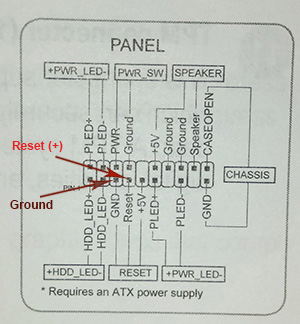
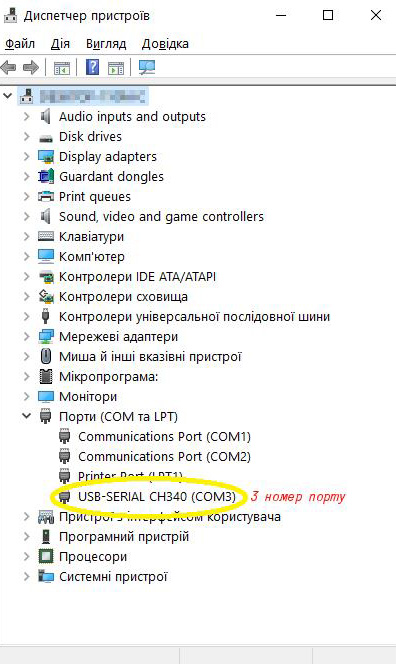
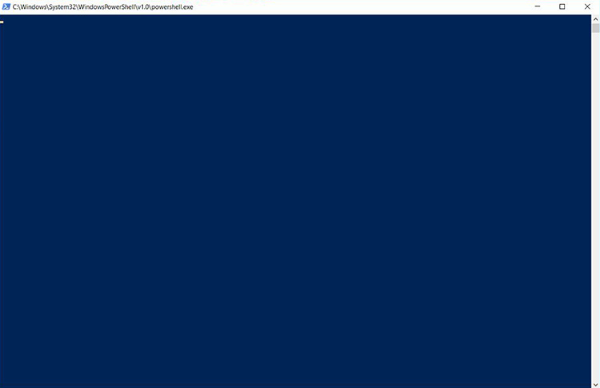
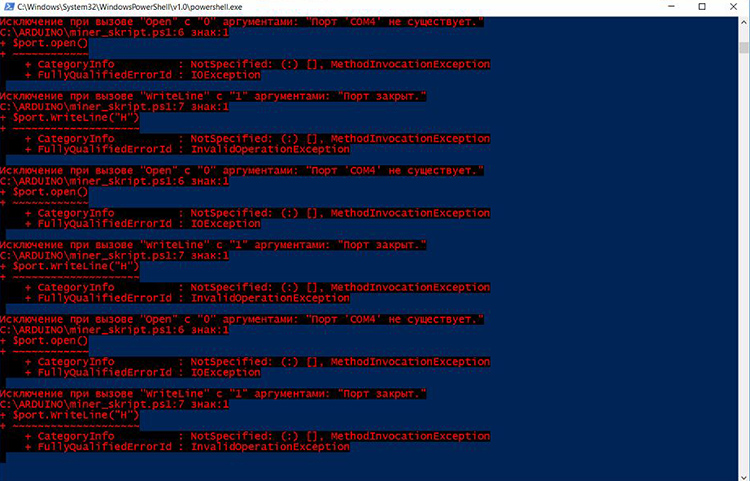

Детальніше..
Як налаштувати?
Для того щоб правильно налаштувати автоматичне перезавантаження майнінг ферми, використовуючи гаджет SwR, необхідно під'єднати його з допомогою USB кабелю у вільний порт на материнській платі, а синій одножильний провід під’єднати до одного з двох контактів кнопки RESET на материнській платі, який має позначку плюс (+). Розташування контактів кнопки RESET наведено у відповідній документації до вашої материнської плати. Як правило він розташований в одній групі контактів разом із POWER, HDD тощо. В технічній документації, а також на самій материнській платі зазначено який із двох контактів для підключення кнопки RESET є плюсовим, а який мінусовим (ground), тут важливо не помилитись. Якщо ви переплутаєте контакти нічого не станеться, але в разі "зависання" ферма перезавантажуватися не буде, тому після всіх налаштувань проведемо випробовування. Типове розташування контактів кнопки RESET показано на малюнку 1.
Малюнок 1.
Після підключення пристрою до USB порту система повинна визначити новий під’єднаний пристрій та постарається встановити для нього відповідні драйвери. Щоб перевірити чи під’єднаний пристрій, системою визначено правильно необхідно відкрити диспетчер пристрої вашого комп'ютера. Для цього треба навести вказівник миші на іконку Windows в нижньому правому куті монітору та натиснути праву кнопку миші. Після цього в меню, яке появиться, необхідно вибрати пункт диспетчер пристроїв. У вікні програми диспетчера пристроїв необхідно знайти та розкрити пункт - Порти (COM та LPT). Коли пристрій встановлено правильно у вашій системі має з'явитись новий COM порт як наведено на малюнку 2.
Малюнок 2.
Якщо відповідні драйвери в системі відсутні, вам необхідно їх встановити самостійно. Для цього, за цим посиланням, їх треба завантажити та встановити на комп'ютері. Сам процес установки не вимагає від вас якихось особливих навичок просто дійте відповідно інструкцій при встановленні драйверів.
Наступним кроком необхідно визначити який номер COM порту присвоєно системою нашому пристрою, а це не що інше як та цифра поряд із абревіатурою COM як показано на малюнку 2.
На цьому перший етап налаштувань завершено. Після цього від'єднуємо наш пристрій від USB порту, в противному випадку він зможе перезавантажити комп'ютер.
Далі необхідно завантажити архів в якому є два файли з розширенням *.ps1 та *.bat звідси.
Розглянемо окремо кожний з фалів.
Файл з розширенням *.ps1 є скриптом, що має запускатись щоразу як ви завантажуєте комп'ютер. Для правильного налаштування ферми слід внести до нього деякі корективи. Для цього його слід відкрити звичайним блокнотом. Нижче приведено текст скрипта з файлу з розширенням *.ps1:
(Get-Date).ToString('dd.MM.yyyy HH:mm') | Out-File C:\ARDUINO\reboot.txt -append
while($TRUE){
Start-Sleep -s 3
$port= new-Object System.IO.Ports.SerialPort COM3,9600,None,8,one
$port.open()
$port.WriteLine("H")
$port.Close()
}
В цьому файлі нам необхідно внести дві корективи, а саме: вказати правильний шлях до файлу в якому буде вестись лог перезавантажень (c:\ARDUINO\reboot.txt) ферми та правильно зазначити номер COM порту (SerialPort COM3) замінивши цифру (номер порту на ту, що ми визначили на попередньому етапі).
Тут важливо запам’ятати, що шлях до розташування лог файлу слід вибирати поза системних папок так, як політика безпеки WINDOWS не дозволить його створювати в системних папках. Зазвичай слід прописувати його в корні диску С, або створити для цього якусь окрему папку, сам скрипт та бат файл також можна розташувати там.
Вказавши шлях до лог файлу та номер COM порту зберігаємо файл з розширенням *.ps1 більш ніяких виправлень у ньому не потрібно робити. В зв’язку з тим, що політика безпеки WINDOWS не дозволяє безпосереднього автоматично завантажувати скрипт файл при кожному старті системи, то його ми будемо запускати за допомогою *.bat файлу.
Який також попередньо відредагуємо в текстовому редакторі. Ось його зміст:
start PowerShell.exe -ExecutionPolicy ByPass -File "c:\шлях до вашого файлу\ваш файл.ps1"
Як бачимо зміст його дуже простий, вкажіть шлях до розташування файлу скрипта і збережіть його. Після цього додаємо його (*.bat файл) до переліку програм в листі автозавантаження (для Windows 10 - це права кнопка миші по пуску-> виконати, далі вводимо "shell:startup" і натискаємо Enter. Відкривається вікно автозавантаження туди додаємо ярлик на *.bat файл) і все можна випробовувати.
Для цього вимикаємо ферму та приєднуємо наш пристрій до того USB порту в який на попередньому етапі налаштувань ми вже його підключали. Включаємо копм'ютер.
Після завантаження системи і виконання команди автозавантаження повинно з'явитись вікно як на малюнку 3. Якщо налаштування пройшли правильно то в синьому вікні не буде ніяких повідомлень
Малюнок 3.
Чому важливий саме той USB порт, а не інший так, як при підключенні до другого порту система присвоїть інший номер для COM порту, а отже другий етап налаштувань нам необхідно буде провести заново.
У випадку будь яких помилок в налаштуванні ви побачите текст із проблемою як на малюнку 4.
В такому випадку потрібно перевірити ще раз правильність налаштування на всіх етапах
Малюнок 4.
На цьому ВСЕ!
У випадку зависання системи гаджет не отримає відклик від програми яка опитує COM-порт і орієнтовно через 2 хвилини перезавантажить систему!
Як замовити?
Напишіть листа на адресу: switchres3@gmail.com
В замовленні потрібно вказати:
- кількість;
- чи потрібно кабель mini-USB;
- координати зворотного зв'язку та адресу куди відправити (місто і номер складу Нової пошти);
Вартість гаджета - 15$
Вартість гаджета + кабельUSB 2.0-microUSB - 17$
Термін виконання 5 днів